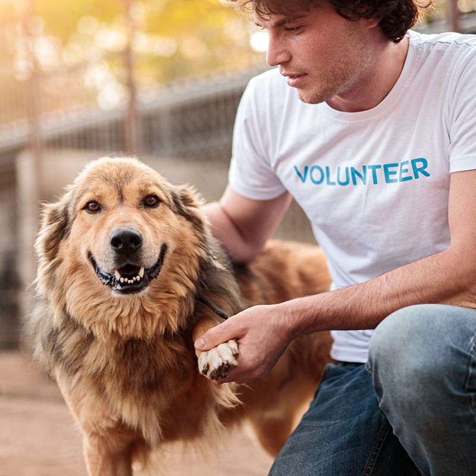

Adoption, Foster, and Volunteer Opportunities
Our Adoption Process
- Review available pets and learn about their needs.
- Submit an adoption interest inquiry.
- Speak with a rescue representative about your household and lifestyle.
- Meet the pet if a good match is identified.
- Complete the adoption process and welcome your new pet home.
Our Foster Program
Foster families provide temporary homes for pets while they wait for permanent adoption. Fostering gives animals a safe place to rest, receive care, and show their personalities.
Volunteer Roles
- Help at adoption events and community outreach activities.
- Assist with pet care, cleaning, and organization.
- Transport animals or donated supplies when needed.
- Take pet photographs and write adoption profiles.
- Support fundraising and community partnerships.

Pet Spotlight

Get Involved
Whether you are interested in adoption, fostering, volunteering, or supporting the rescue through a community partnership, we welcome your interest.